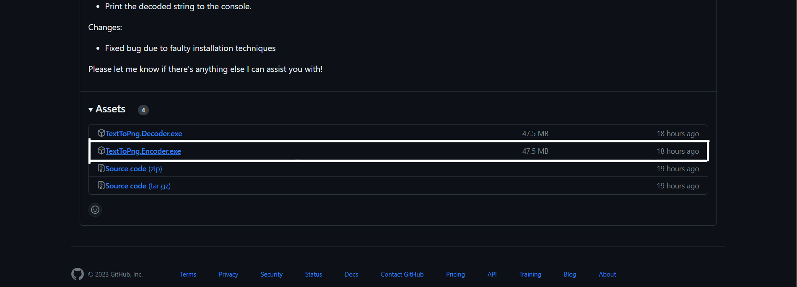
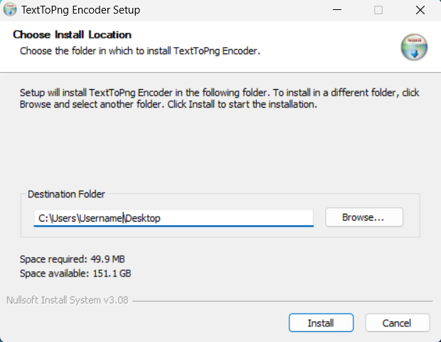
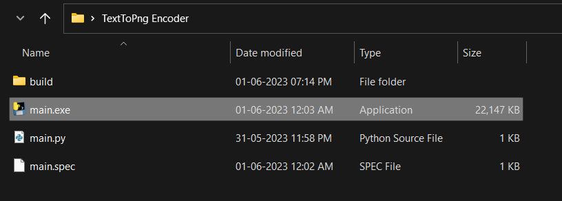
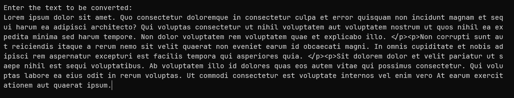

About
This is for people who don't have python installed, if you have python installed go to this page. This documentation provides instructions and usage examples for the Encoder and Decoder apps. The Encoder app converts a given string to binary representation and generates an image. The Decoder app reverses this process to convert the binary image back to the original string.
Encoder
To use the Encoder app, download the latest release of the executable installer from the Releases page.
Installation Steps
- Download the installer file from the latest releases page 
- Run the installer then click more info and then run anyway
- Go through the installer 
- Navigate to the app folde and run the main app 

Usage:
Enter Text you would like to be converted
Output:
- Output for the above text: (rotated)
- A binary representation of the input string.
- An image representing the binary string in the same folder.
Decoder
To use the Decoder app, download the latest release of the executable installer from the Releases page using the same method as mentioned in the Encoder section.
Usage:
Shift the output image to the same folder as the decoder and then run it to get the encoded message
Output:
- The decoded string extracted from the image.